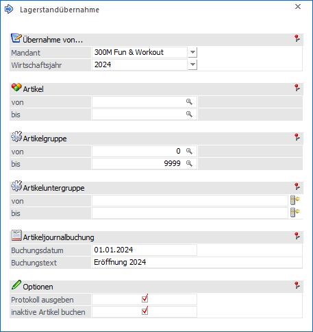
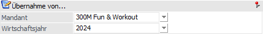
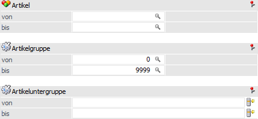
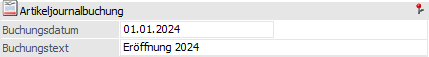
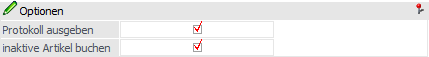
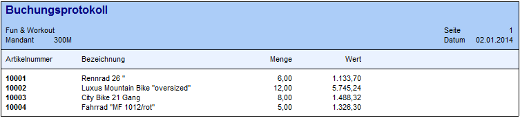
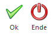

Nach der Durchführung eines Jahreswechsels können über den Menüpunkt…
1 WinLine FAKT
1 Abschluss
1 Lagerstandübernahme
… die Lagerwerte (Lagerstand und Lagerwert) des Vorjahresmandanten in den aktuellen Mandanten übernommen werden. Dieses betrifft auch die Bestände und Werte der einzelnen Lagerorte, wenn mit dem WinLine Lagermanagement gearbeitet wird.
Achtung
Folgende Punkte sind generell bei der Übernahme zu beachten:
ü Ablauf der Übernahme
Nach dem
Jahresabschluss (WinLine START - Abschluss - Jahresabschluss) wechselt man im
neuen Wirtschaftsjahr in die WinLine FAKT und öffnet das Programm
"Lagerstandsübernahme". Nachdem der Quellmandant samt Wirtschaftsjahr (ggfs. mit
weiteren Selektionen) ausgewählt wurde, wird die Übernahme per Button "Ok" bzw.
Taste F5 gestartet.
ü Häufigkeit der Übernahme
Die
Lagerstandübernahme kann beliebig oft durchgeführt werden, da das Programm die
bereits übernommenen Werte mit den Werten des alten Mandanten vergleicht und nur
die Differenzen übernimmt.
Beispiel
Nach der Lagerstandsübernahme wird im alten Wirtschaftsjahr ein Eingangslieferschein erfasst. Damit die Veränderung der Lagerstände bzw. Lagerwerte auch im aktuellen Wirtschaftsjahr Berücksichtigung findet, wird nochmals eine Lagerstandsübernahme durchgeführt.
ü Rumpfwirtschaftsjahr
Wird mit
einem Rumpfwirtschaftsjahr gearbeitet, so kann für das Geschäftsjahr
(nicht Wirtschaftsjahr) bereits eine Lagerstandsübernahme stattgefunden
haben. In solch einem Fall muss die Lagerstandsübernahme manuell erfolgen!
Beispiel
Es wird mit einem "ungeraden" Wirtschaftsjahr gearbeitet, welches in 07.2023 startet und in 06.2024 endet. Für dieses wurde bereits eine Lagerstandsübernahme durchgeführt, wobei die Übernahmewerte intern mit 2024 (Ende des Wirtschaftsjahres) abgelegt wurden. Nun soll auf ein "gerades" Wirtschaftsjahr gewechselt werden, was bedeutet, dass das kommende Jahr im Mandantenstamm von "07.2024 - 06.2025" auf "07.2024 - 12.2024" gekürzt wird. Da eine Lagerstandsübernahme nun wieder Übernahmewerte für 2024 erzeugen würde, muss die Übernahme manuell erfolgen!

Folgende Auswahl- bzw. Selektionskriterien stehen zur Verfügung:
Übernahme von…

Ø Mandant
In diesem Feld wird der Mandant ausgewählt, aus welchem die Werte übernommen werden sollen. Dabei wird der aktuelle Mandant voreingestellt.
Ø Wirtschaftsjahr
An dieser Stelle muss das Wirtschaftsjahr ausgewählt werden, aus welchem die Lagerwerte übernommen werden soll. Dabei wird das Vorjahr des aktuellen Wirtschaftsjahres vorgeschlagen.
Selektion

Ø Artikel von / bis
An dieser Stelle kann eine Einschränkung auf die Artikel durchgeführt werden, für welche die Lagerwerte übernommen werden sollen.
Achtung
Handelt es sich um einen Hauptartikel mit Ausprägungen, so sollte immer der gesamte Artikelbereich (Hauptartikel bis zu der letzten Ausprägung) selektiert werden. Bei der alleinigen Eingrenzung auf den Hauptartikel wird nur dessen Lagerstand (ohne Ausprägungen) übernommen. Zusätzlich wird die Übernahmelogik der Option "inaktive Artikel buchen" außer Kraft gesetzt.
Ø Artikelgruppe von / bis
Wenn die Übernahme nicht komplett durchgeführt werden soll, dann ist an dieser Stelle eine Selektion nach der Artikelgruppe möglich.
Ø Artikeluntergruppe von / bis
Wenn die Übernahme nicht komplett durchgeführt werden soll, dann ist an dieser Stelle eine Selektion nach der Artikeluntergruppe möglich.
Artikeljournalbuchung

Ø Buchungsdatum
Durch die Lagerstandsübernahme werden Artikeljournalzeilen gebildet und mit dem Buchungsdatum versehen, welches an dieser Stelle definiert wurde.
Ø Buchungstext
Durch die Lagerstandsübernahme werden Artikeljournalzeilen gebildet und mit dem Buchungstext 1 versehen, welches an dieser Stelle definiert wurde.
Optionen

Ø Protokoll ausgeben
Durch Aktivierung dieser Option wird bei einer Übernahme ein Protokoll in den Spooler bzw. am Drucker (gemäß der Standardausgabevariante) ausgegeben.
Beispiel

Ø inaktive Artikel buchen
Mit Hilfe dieser Option wird die Lagerstandsübernahme auch für Artikel, welche als "inaktiv" definiert wurden, durchgeführt.
Hinweis
Wenn die Protokollausgabe aktiviert wurde (siehe Option "Protokoll ausgeben"), inaktive Artikel mit Lagerstand existieren und die Option "inaktive Artikel buchen" deaktiviert ist, so werden diese inaktiven Artikel mit Lagerstand auf dem Protokoll - als Information - ausgegeben.
Achtung
Die Option "inaktive Artikel buchen" hat einen direkten Einfluss auf die Lagerstandsübernahme von Hauptartikeln mit Ausprägungen:
ü Option ist deaktiviert
Der
Lagerstand des Hauptartikels ermittelt sich direkt aus den Lagerständen seiner
Ausprägungen. Direkte Buchungen auf den Hauptartikel werden somit bei der
Übernahme nicht berücksichtigt.
ü Option ist aktiviert
Es werden,
neben den Lagerständen der Ausprägungen, auch der Lagerstand des Hauptartikels
direkt übernommen. Ggfs. vorhanden Differenzen zwischen Hauptartikel und
Ausprägungen sind somit auch im neuen Wirtschaftsjahr vorhanden.
Buttons

Ø Ok
Durch Anwahl des Buttons "Ok" bzw. der Taste F5 wird die Lagerstandsübernahme durchgeführt.
Achtung
Für den Einsatz der Lagerübernahme ist zu beachten, dass hier wirklich nur und ausschließlich Lagerbuchungssätze erzeugt werden. D.h. werden im alten Jahr noch nachträglich Fakturen geschrieben und diese Lagerstände nachgetragen, so wird eine Reihe von Datenbereichen nicht upgedated. Die Artikelperiodenwerte sind schon in den aktuellen Mandanten übertragen, daher sind sie dort für das Vorjahr entsprechend niedriger. Auch die Vertreterabrechnung muss manuell überarbeitet werden.
Ø Ende
Bei Anwahl des Buttons "Ende" bzw. der Taste ESC wird das Fenster geschlossen und keine Übernahme durchgeführt.